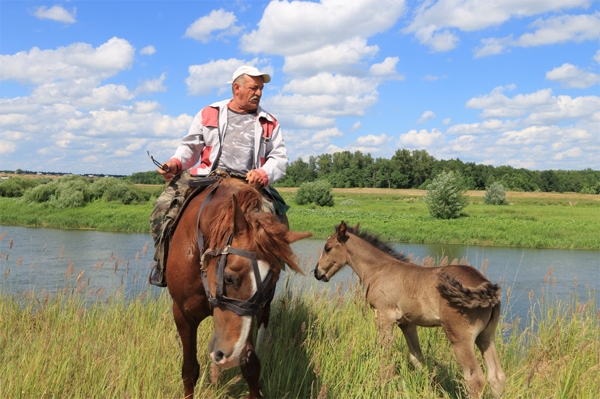
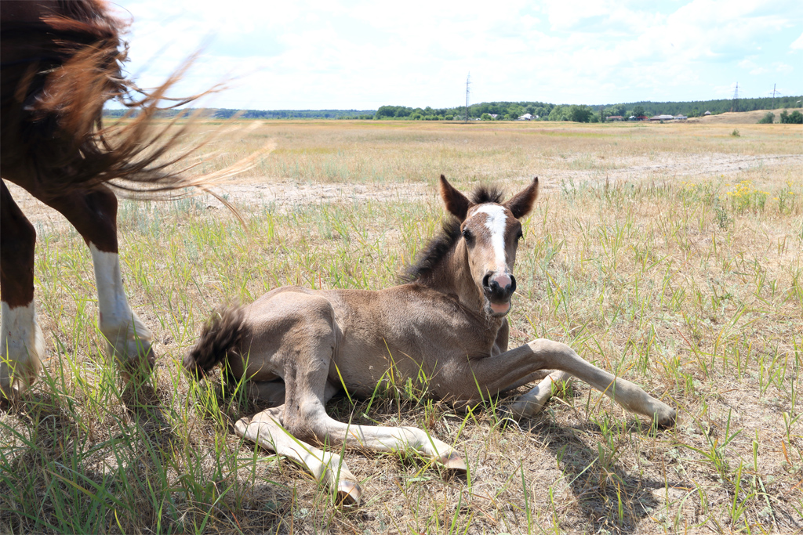
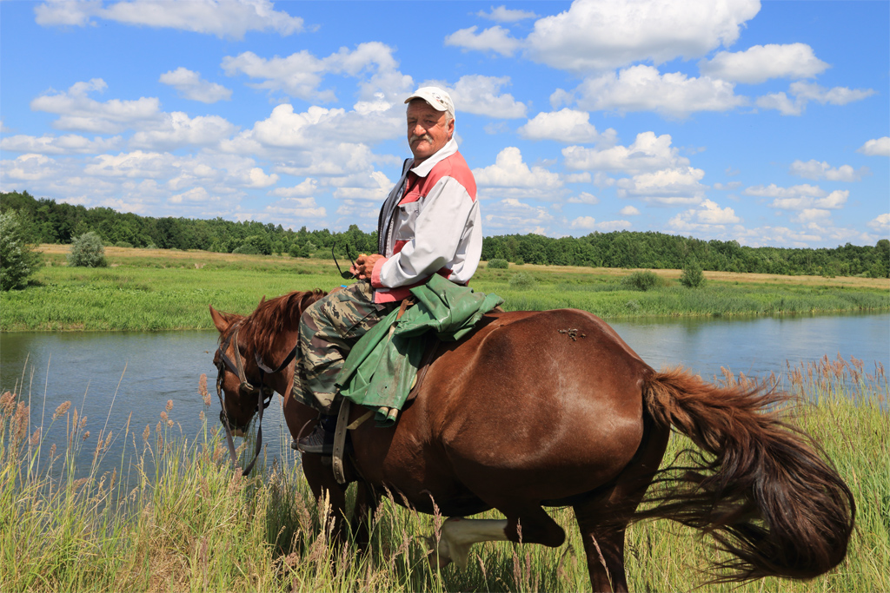
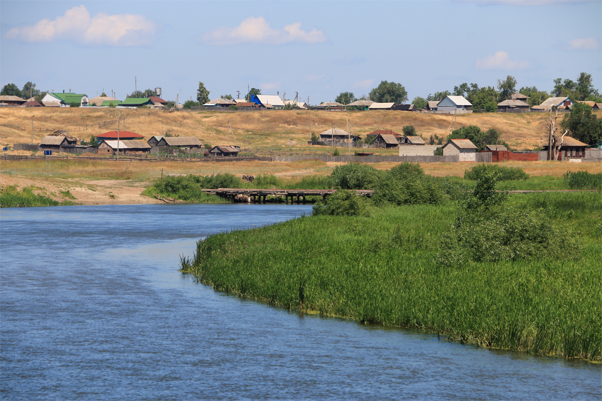

Откуда-то сверху раздался голос: "Зажевать что-нибудь есть?"
Всё мигом прояснилось - у человека есть выпивка, нужна закуска. В подтверждение серьезности своих намерений всадник (как выяснилось, пастух местного коровьего стада) достал откуда-то из глубины своей одежды чекушку, наполненную мутноватой жидкостью. Из закуски у меня оказался только пирожок с капустой. Отпив немного из бутылки, отломил маленький кусочек пирожка, похвалил закуску и предложил чекушку мне. Объяснив, что я за рулем и с ребенком в машине, отказался, на что последовала резонная реплика: "Я тоже за рулем и тоже с ребенком". Словно в подтверждение слов пастуха жеребенок повалился на землю и начал демонстрировать свой юный возраст.

Владимир Иванович, так звали пастуха, задал мне контрольный вопрос: "Как ты думаешь, сколько ему?" Я понятия не имею, как выглядят жеребята в детстве, и брякнул от фени: "Три месяца." Лицо пастуха стало одним сплошным презрением: "Две недели!"
Проведя политинформацию о положении в мире и особенно на Украине, уроженцем которой он оказался, пастух с достоинством Тараса Бульбы отправился дремать в деревню, оставив стадо пастись в автономном режиме.


А мы забросили удочки и погрузились в мир ужения пресноводных рыб.